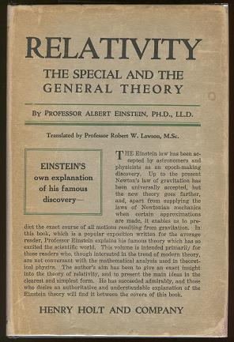

Albert Einstein
Theoretical Physicist
In 1905, a year sometimes described as his annus mirabilis ('miracle year'), Einstein published four groundbreaking papers. These outlined the theory of the photoelectric effect, explained Brownian motion, introduced special relativity, and demonstrated mass–energy equivalence. Einstein thought that the laws of classical mechanics could no longer be reconciled with those of the electromagnetic field, which led him to develop his special theory of relativity. He then extended the theory to gravitational fields, he published a paper on general relativity in 1916, introducing his theory of gravitation. In 1917, he applied the general theory of relativity to model the structure of the universe. He continued to deal with problems of statistical mechanics and quantum theory, which led to his explanations of particle theory and the motion of molecules. He also investigated the thermal properties of light and the quantum theory of radiation, which laid the foundation of the photon theory of light.
Experiences


Theory of relativity
In his early days in Berlin, Einstein postulated that the correct interpretation of the special theory of relativity must also furnish a theory of gravitation and on March 20, 1916 ubmitted to the German scientific journal Annalen der Physik the final version of an article outlining his answer to the scientific problem he had been wrestling with for nearly a decade. He called his solution a “General Theory of Relativity” and included its applications to cosmology in the publication. A thorough introduction to tensor calculus and curved manifolds is included. After the necessary mathematical tools are introduced, a thorough presentation of the theory of relativity is given. Anisotropic cosmological models are also included in it.
Investigations on Theory of Brownian Movement
This volume contains five papers investigating the dynamics of this phenomenon by Albert Einstein. Written between 1905 and 1908, the papers evolve an elementary theory of the Brownian motion, of interest not only to mathematicians but also to chemists and physical chemists. The titles of the papers are "Movement of Small Particles Suspended in a Stationary Liquid Demanded by the Molecular-Kinetic Theory of Heat", "On the Theory of the Brownian Movement", "A New Determination of Molecular Dimensions", "Theoretical Observations on the Brownian Motion", and "Elementary Theory of the Brownian Motion." The book was published in 1926.
The Evolution of Physics
Published in 1938, the theoretical problems that physicists had to face throughout history and their solutions are explained in this book. It really puts the emphasis on the philosophical aspect of physics and the thought process that comes with it, without getting in too much to the technical part. Using this work to push his realist approach to physics in defiance of much of quantum mechanics, Einstein's The Evolution of Physics was published to great popularity and was featured in a Time magazine cover story.